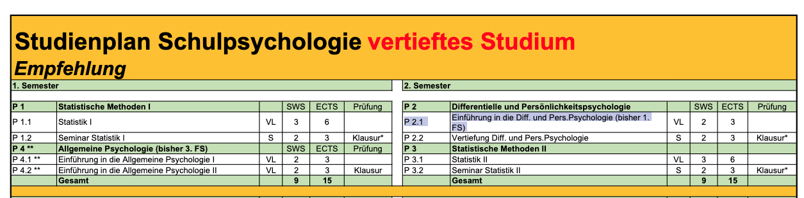
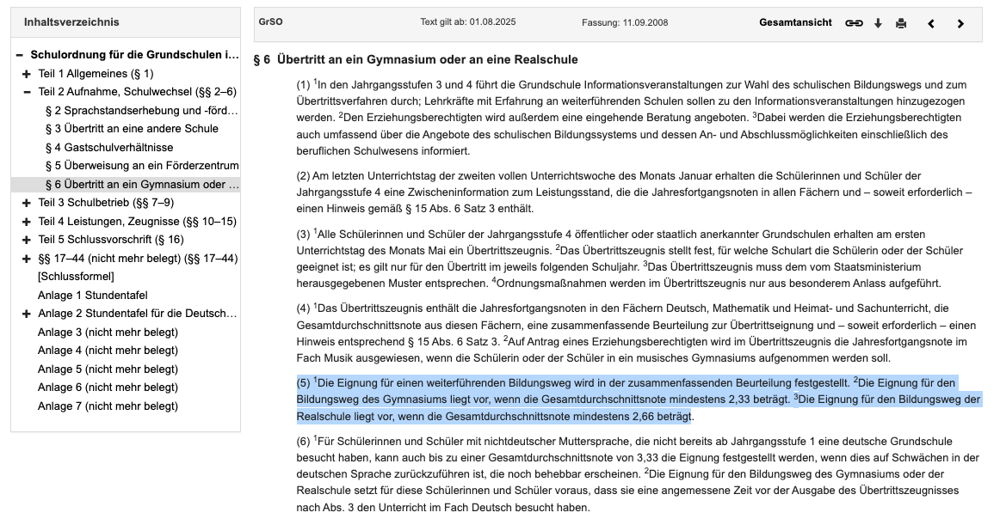
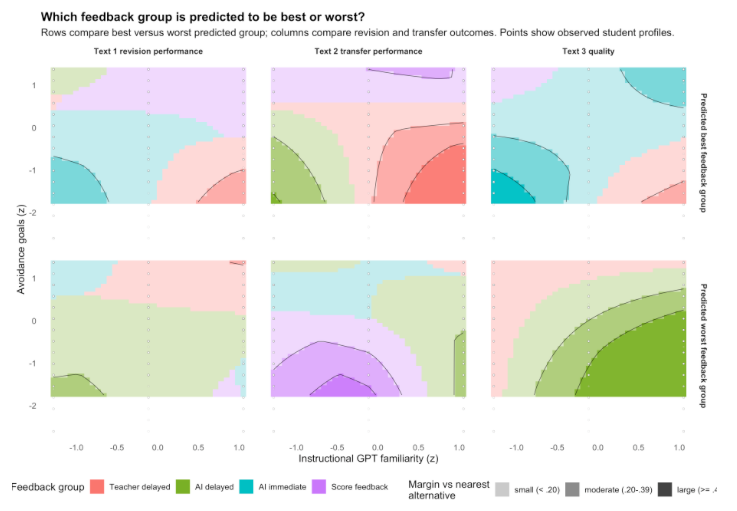
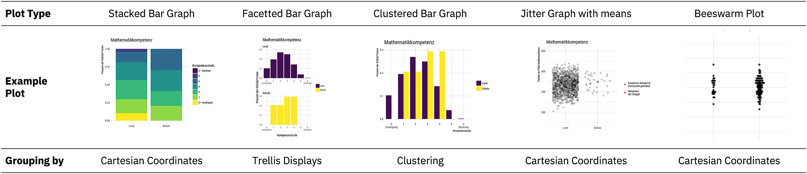
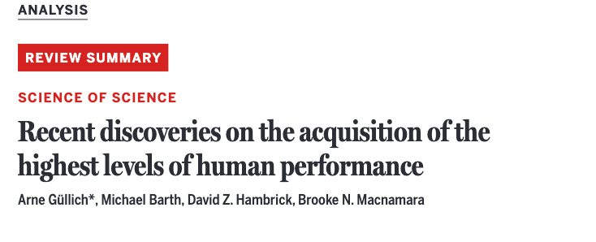
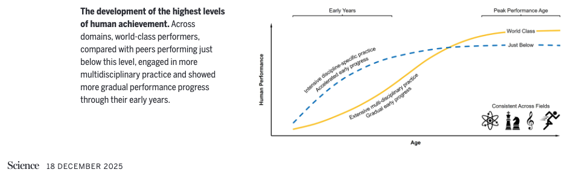
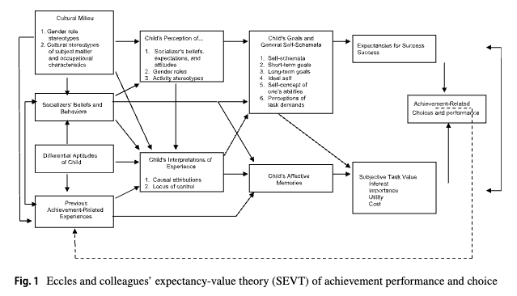
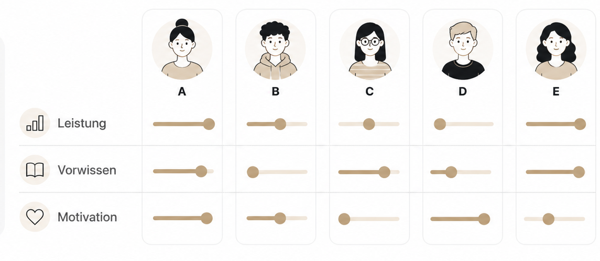
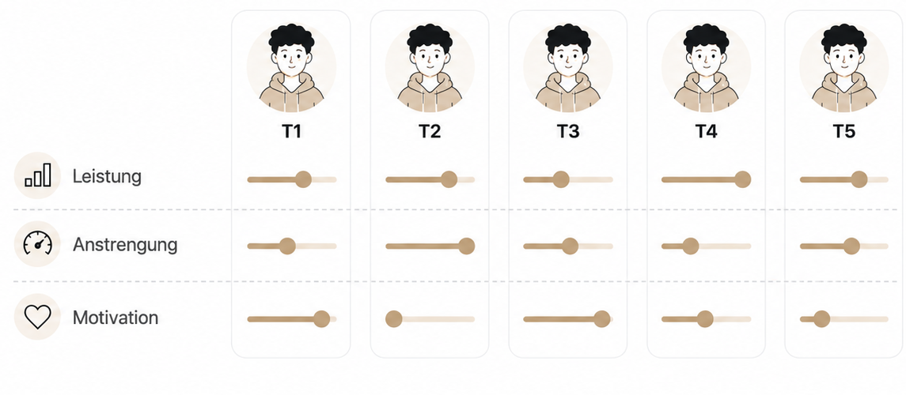

P2.1 Vorlesung
Die Lehrprobe ist als Ausschnitt aus der Einführung in die Differentielle und Persönlichkeitspsychologie gerahmt.
Lehrprobe | LMU München | Differentielle Psychologie im Kontext Schule
Intra- und interindividuelle Unterschiede in der Schule
Curriculare Einordnung
Die Lehrprobe ist als Ausschnitt aus der Einführung in die Differentielle und Persönlichkeitspsychologie gerahmt.

Individuelle Unterschiede werden hier begrifflich vorbereitet, damit pädagogische Psychologie, Diagnostik und Gutachten später nicht bei Einzelnoten stehen bleiben.
Einordnung innerhalb der Lehrveranstaltung
| Block | Termin | Sitzungstitel | Funktion |
|---|---|---|---|
| I. Schulleistung verstehen | 1 | Was ist Schulleistung? Noten, Tests, Kompetenzen und Bezugsnormen | Grundlegen, was als Leistung sichtbar und messbar wird |
| 2 | Gleiche Note, unterschiedliche Profile: inter- und intraindividuelle Unterschiede in Schulleistung | Lehrprobe: zeigen, warum ein Leistungswert diagnostisch verschieden bedeuten kann | |
| II. Personmerkmale als Lernvoraussetzungen | 3 | Intelligenz und kognitive Fähigkeiten im Schulkontext | Klassische differentielle Grundlage schulischer Leistung |
| 4 | Vorwissen, Sprache und Lernvoraussetzungen | Nähe zu Unterricht, Fachlernen und Bildungsübergängen herstellen | |
| 5 | Persönlichkeit, Temperament und schulisches Verhalten | Breitere individuelle Unterschiede im Unterrichtskontext | |
| III. Motivation und Selbstbild | 6 | Motivation, Interesse und Zielorientierungen | Warum Lernende Leistung unterschiedlich aufnehmen und verfolgen |
| 7 | Akademisches Selbstkonzept und Selbstwirksamkeit | Übergang zu Bezugsgruppen, Selbstbewertung und Entwicklung | |
| 8 | Emotionen, Prüfungsangst und Wohlbefinden in Leistungssituationen | Leistung nicht nur kognitiv, sondern motivational-affektiv verstehen | |
| IV. Entwicklung und Kontext | 9 | Stabilität und Veränderung individueller Unterschiede | Intraindividuelle Entwicklung systematisch vertiefen |
| 10 | Familie, soziale Herkunft und Bildungsungleichheit | Kontextbedingungen individueller Schulleistung | |
| 11 | Klasse, Unterricht und Bezugsgruppen | Person-Umwelt-Passung und soziale Vergleichsprozesse | |
| V. Von Unterschieden zu pädagogischem Handeln | 12 | Diagnostische Urteile von Lehrkräften: Chancen und Fehlerquellen | Brücke zu Diagnostik und schulpsychologischer Professionalität |
| 13 | Feedback, Förderung und schulpsychologische Anschlussfragen | Abschluss: aus Unterschieden werden pädagogische Entscheidungen |
Start der Lehrprobe | LMU München | Differentielle Psychologie im Kontext Schule
Intra- und interindividuelle Unterschiede in der Schule
Gesellschaftspolitischer Einstieg
Schulpsycholog:innen beraten den Schulübergang.
Auftrag der Schulpsychologie
Institutionelle Entscheidungsschwelle

Beratungsfall
Beide Familien fragen: Sollte mein Kind auf das Gymnasium gehen?
Aufbau der Lehrprobe
Der Beratungsfall macht sichtbar, dass ein Kennwert die Entscheidung nicht trägt.
Vor der Erklärung formulieren Sie selbst, was Sie für eine Empfehlung noch wissen müssten.
Wir verorten die Fallfrage im Studium und fokussieren das Lernziel.
Interaktive Grafiken und Studienbeispiele zeigen, wie Mittelwerte, Streuung, Outcome und Verlauf die Deutung verändern.
Wir verdichten die Modelle zu den beiden Perspektiven: Vergleich zwischen Lernenden und Verlauf innerhalb einer Person.
Wir verdichten, welche Befundlage eine verantwortbare Empfehlung trägt.
Die Falllogik führt in spätere Diagnostik, Gutachten und die nächste Sitzung weiter.
Aktivierung
Anschluss im Studium
| Anschluss im Lehramtsstudium | Wiederkehrende Frage am Fall Mira/Lina |
|---|---|
| Differentielle Psychologie | Welche Unterschiede liegen zwischen und innerhalb von Lernenden vor? |
| EWS: Lernen, Entwicklung, Sozialisation | Wie entwickeln sich Leistung, Motivation und Selbstkonzept in Schule und Familie? |
| Schulpädagogik / Didaktik / Praktika | Wie werden Leistungsprofile im Unterricht beobachtbar und förderbar? |
| Diagnostik und schulpsychologische Beratung | Welche Befundlage trägt eine verantwortbare Empfehlung? |
Lernziel der Sitzung
Interaktive Lernfolie | Interindividuelle Unterschiede
Zwischen Schulen
Bedeutung individueller Unterschiede

Datenkompetenz | VERA 3

Merk, S., Groß Ophoff, J., & Kelava, A. (2023). Learning and Instruction, 84, Article 101717. https://doi.org/10.1016/j.learninstruc.2022.101717
Bedeutung intraindividueller Unterschiede


Der aktuelle Wert ist nicht so vorhersagestark wie der Verlauf.
Für Schullaufbahnberatung und Visible Learning heißt das: Wir brauchen Verläufe und Bedingungen, nicht nur Schwellenwerte.
Güllich, A., Barth, M., Hambrick, D. Z., & Macnamara, B. N. (2025). Recent discoveries on the acquisition of the highest levels of human performance. Science, 390, eadt7790. https://doi.org/10.1126/science.adt7790
Zuspitzung | Einzelnoten
Die Note beschreibt einen relativ konstanten Leistungsstand.
Die Note verdeckt, dass die Person sonst deutlich stärker ist.
Die Note liegt noch mittig, zeigt aber eine positive Entwicklung.
Interaktive Lernfolie | Intraindividuelle Unterschiede
Innerhalb der Person
Arbeitsmodell | SEVT als Landkarte

Interindividuell IntraindividuellDas Modell formalisiert den Gedanken: Verläufe und individuelle Unterschiede verändern, wie Leistung entsteht und gedeutet wird.
Sicherung
Wir vergleichen verschiedene Lernende miteinander.

Interindividuell beantwortet Vergleichsfragen.
Sicherung
Wir betrachten dieselbe Person über Zeit, Situationen oder Aufgaben.

Intraindividuell beantwortet Entwicklungsfragen.
Sicherung
Ausblick | Visible Learning
Erweiterung der Buchreihe Visible Learning zusammen mit John Hattie und Jens Möller.
Geplant ist ein Lehrbuch, das Evidenz zu Unterschieden zwischen Schülerinnen und Schülern systematisch bündelt.Zusammenhänge zwischen Variablen und Schulleistung sind nicht überall gleich. Sie unterscheiden sich zwischen Personen, Klassen, Kontexten und Lernbedingungen.
Die Frage lautet also nicht nur: “Was wirkt?” Sondern: “Für wen, unter welchen Bedingungen und in welchem Verlauf?”
Anschluss an die nächste Veranstaltung
Oboe-Kurs: Intelligenz als Lernvoraussetzung und erste begriffliche Orientierung.
Interaktiver Kurs öffnen 2 Erzählender ZugangEinstiegsvideo: Warum Intelligenz als Geschichte von Lernen, Chancen und Deutung relevant wird.
Video öffnen 3 Wissenschaftlicher ZugangEinstiegsartikel: Befunde zu kognitiven Fähigkeiten genauer lesen und auf Beratung beziehen.
Artikel öffnenFunktionen und Begriffsklärung zur aktuellen Folie